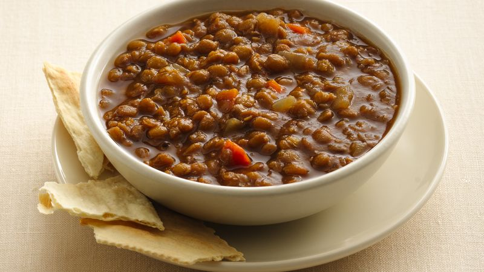

Busted Magic Draft, a.k.a. Poop Soup

What starts with the best of intentions quickly snowballs out of control
as your colors dry up. Scrapping for D-level playables and awash with regret
and confusion, the resultant concoction can best be described as "Poop Soup".
Ingredients
- 1500 gems
- Inflated ego
- Rudimentary knowledge of format draft signals
Preparation
- Begin the draft.
- Notice a seemingly open lane about 3 to 5 picks in.
- Commit to that lane. Be sure to get your hopes up about the potential.
- Around pick 10, you should start to feel the dread rising as the final picks yield nothing playable.
- Reaffirm your mental commitment to making the plan work.
- Open crap in Pack 2.
Try this for a neat twist:
- Hard pivot after opening an off color bomb in pack 2!
- Force your way into a second color because you expect to see it in Pack 3.
- Observe the great cards getting passed to you in two colors you are not playing.
- Wallow in self pity as the plan utterly fails to materialize.
- Consider dropping without playing a game.
- Play the games, because value.
- Lose the games.
Home